Rebuilt from your references: soft light that flows across every swipe, film grain, frosted glass, centred type, depth of field. A carousel in galaxy dark, a video with a voiceover, and a single image in daylight. Nothing has been posted, emailed or deployed.
Why it could work: Your violet in a dark galaxy: soft light that flows across every swipe, grain, glass and centred type. Premium and still clearly yours.
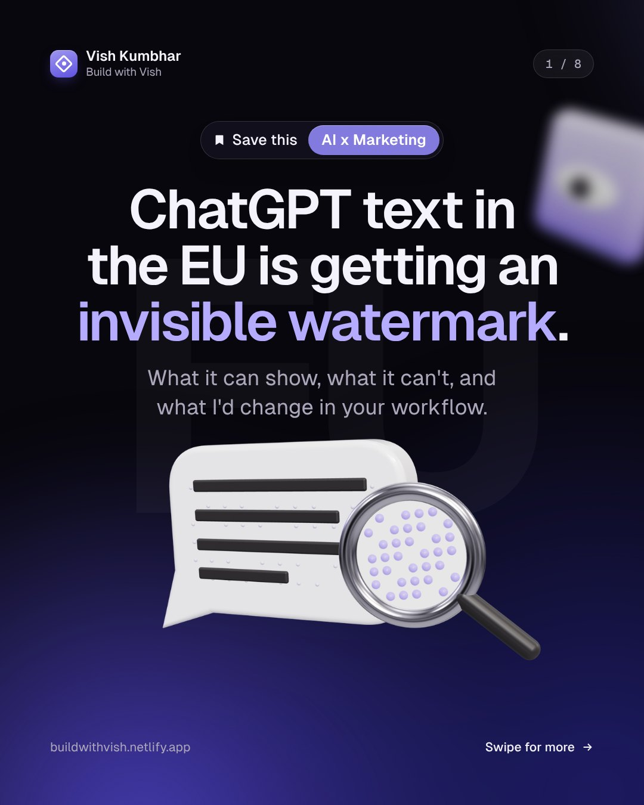
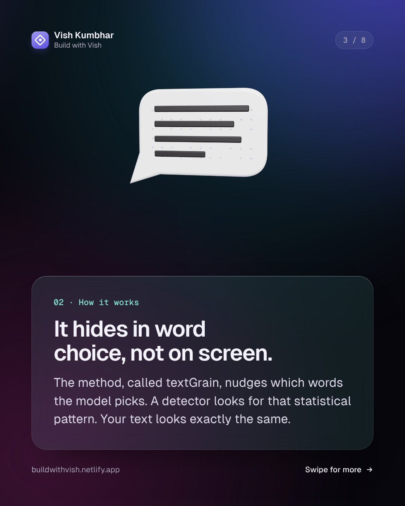
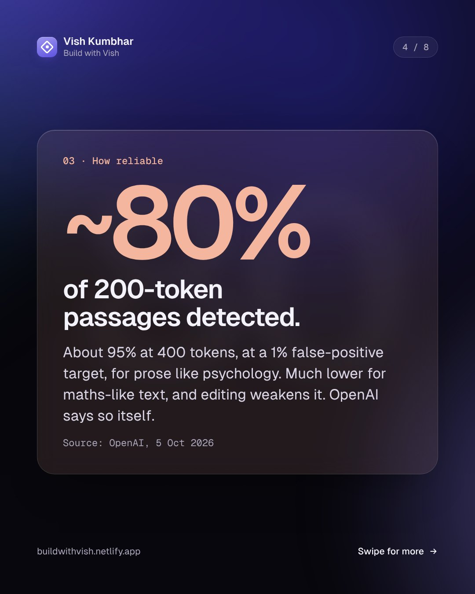
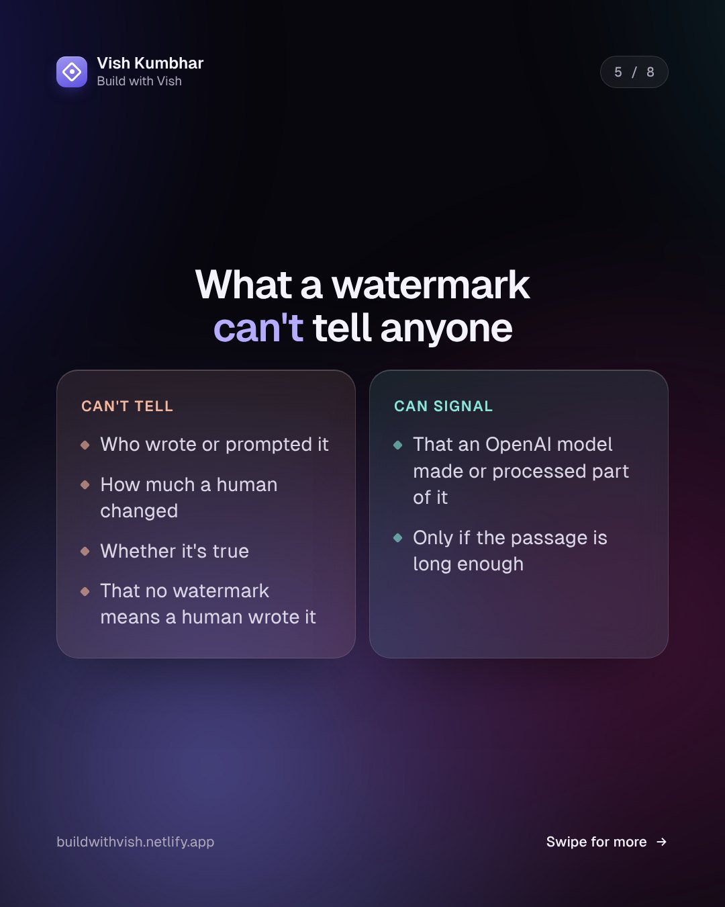
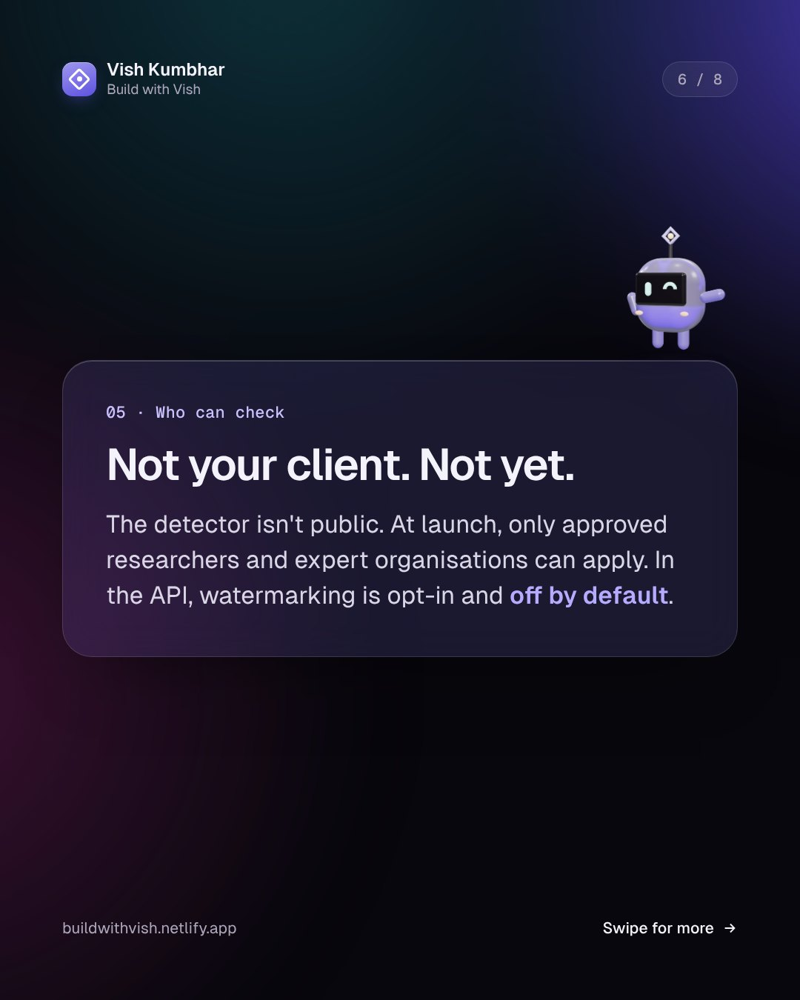
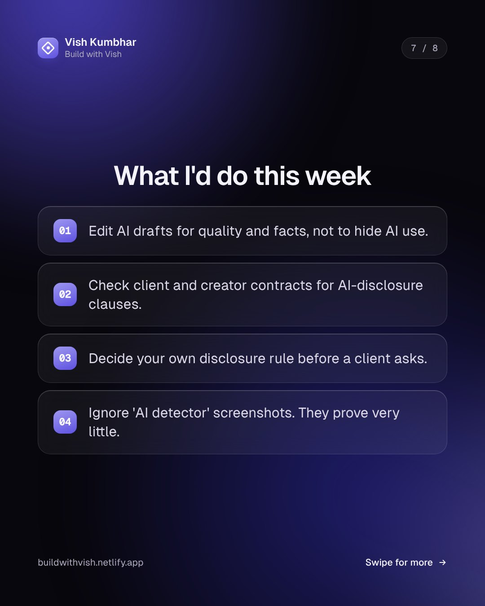
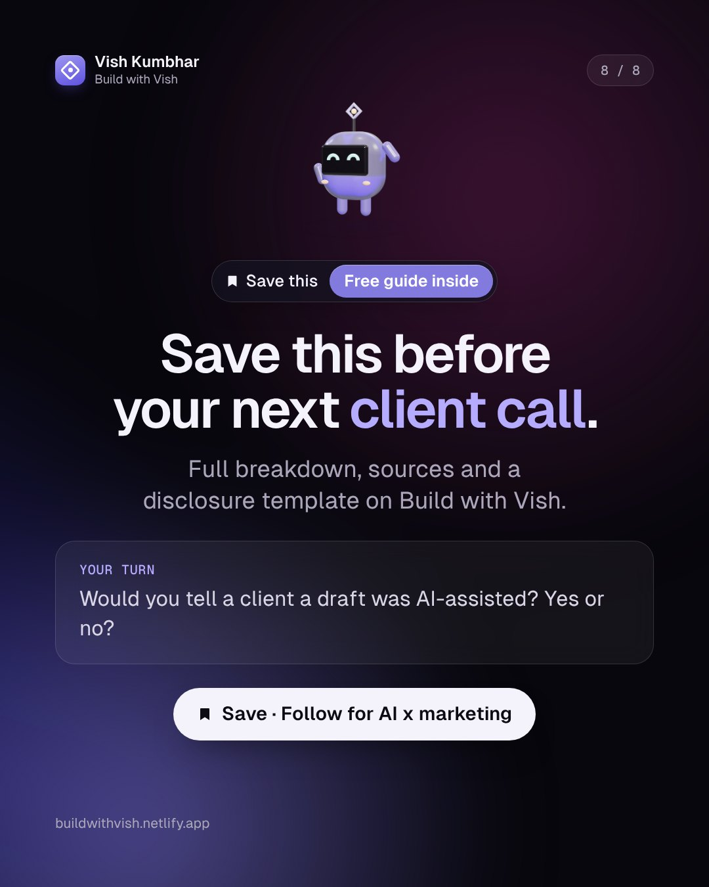
ChatGPT text in the EU is getting an invisible watermark.
ChatGPT text in the EU is getting an invisible watermark. OpenAI announced it on 5 October. Over the coming weeks, eligible ChatGPT and Codex text made in the EU will carry a hidden statistical signal in its word choices. What it can't do, according to OpenAI itself: → It can't tell who wrote or prompted the text → It can't tell how much a human changed it → It can't tell whether the text is true → No watermark doesn't prove a human wrote it → The detector isn't public. Only approved researchers and expert organisations can apply OpenAI's own test numbers, at a 1% false-positive target: about 80% detection on 200-token passages of prose like psychology, about 95% on 400. Much lower for maths-like text. What I'd do as a marketer this week: → Edit AI drafts for quality and facts, not to hide AI use → Check client and creator contracts for AI-disclosure clauses → Decide your disclosure rule before a client asks → Stop trusting "AI detector" screenshots as proof Save this before your next client call. Would you tell a client a draft was AI-assisted? Yes or no?
Full breakdown, OpenAI's source, and a one-paragraph AI-disclosure template you can paste into client contracts: https://buildwithvish.netlify.app/#read-eu-ai-text-watermark (Not legal advice. Check your own contracts.)
| Claim | Source | Date |
|---|---|---|
| Invisible watermark on eligible ChatGPT and Codex text in the EU, "over the coming weeks"; API opt-in, off by default; detector limited to approved researchers | OpenAI, "Our approach to EU text provenance rules" https://openai.com/index/eu-text-provenance/ | 5 Oct 2026 |
| Same, plus "will not become a global default at launch" | OpenAI Developer Community post https://community.openai.com/t/openais-approach-to-eu-text-provenance-rules/1403521 | 5 Oct 2026 |
| textGrain method; ~80% (200 tokens) / ~95% (400 tokens) at 1% FPR; editing weakens it | OpenAI, same page | 5 Oct 2026 |
| What a watermark cannot tell (human contribution, ownership, user identity, accuracy) | OpenAI, same page | 5 Oct 2026 |
| EU AI Act requires machine-readable marking of generated text | OpenAI, same page (restating the Act) | 5 Oct 2026 |
Why it could work: Dark covers stand out on LinkedIn's light feed, and video is where dwell time grows fastest.
30 s · 1080 x 1350 · H.264. Frames:
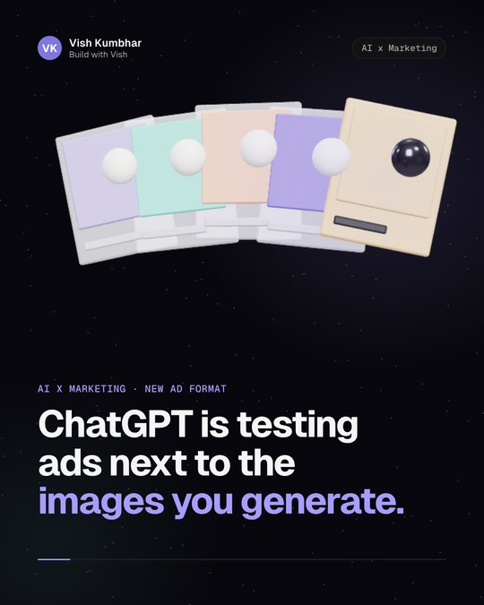
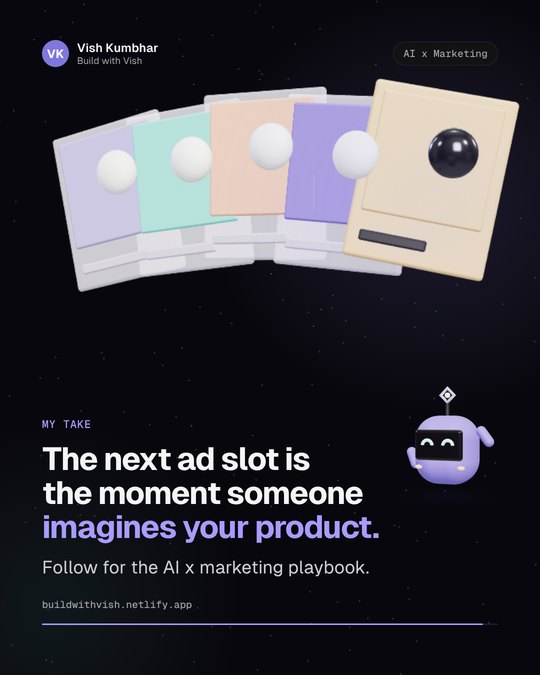
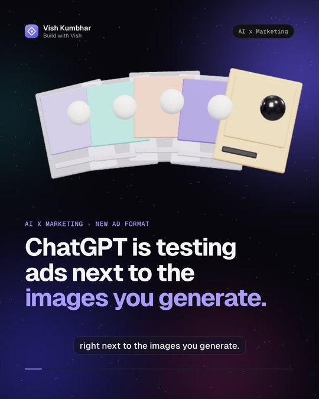
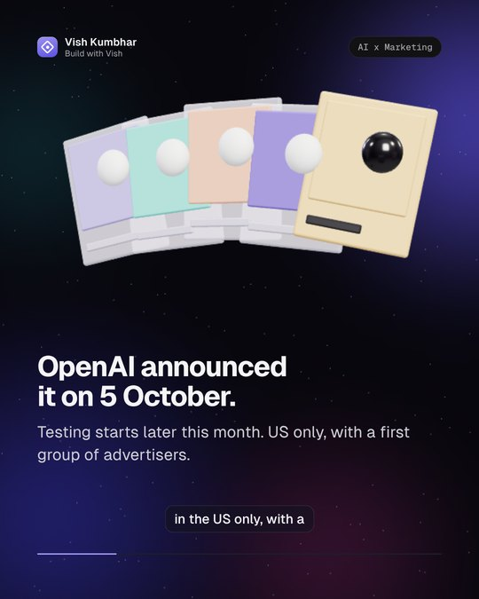
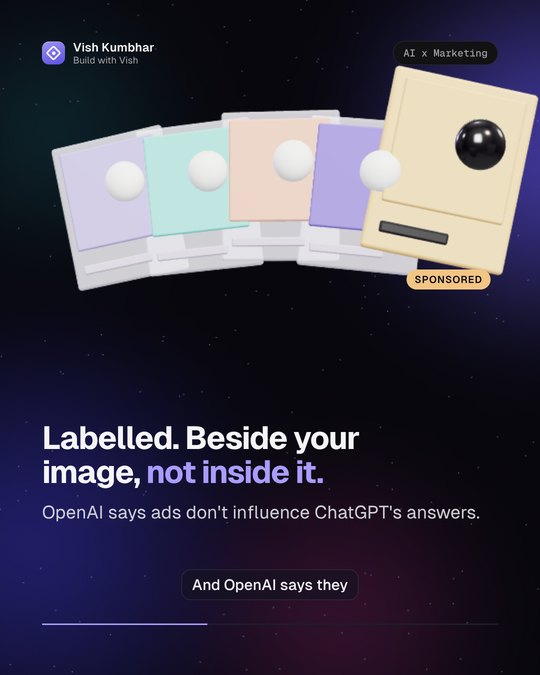
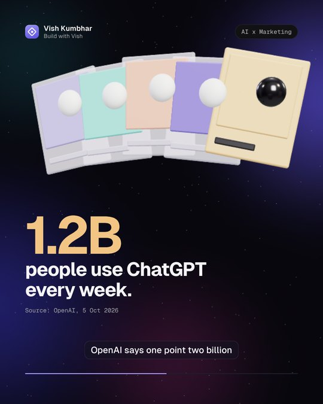
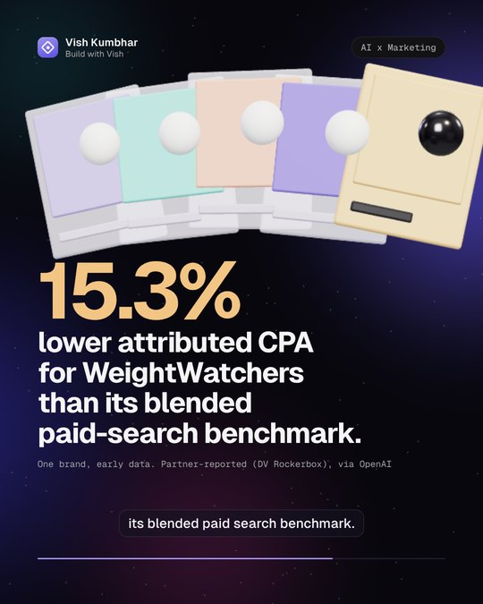
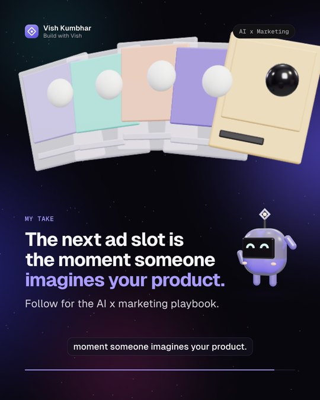
Voice A: af_heart (default)
Voice B: am_michael (male)
ChatGPT is testing ads next to the images you generate.
ChatGPT is testing ads next to the images you generate. OpenAI announced it on 5 October. Testing starts later this month, US only, with a first group of advertisers. The details that matter: → Ads are labelled and sit beside your image, not inside it → OpenAI says ads don't influence ChatGPT's answers → 1.2 billion people use ChatGPT every week (OpenAI's number) → Measurement partners are already plugged in: AppsFlyer, Northbeam, Triple Whale and more Early, partner-reported data: WeightWatchers' attributed CPA on ChatGPT Ads was 15.3% lower than its blended paid-search benchmark (DV Rockerbox, via OpenAI). One brand, one partner, attributed numbers. Treat it as a signal, not proof. My take: the next ad slot is the moment someone imagines your product. It's US-only for now. What would you need to see before you'd move test budget there?
How I'd brief AI (and agencies) before testing any new ad channel, the 6-box brief: https://buildwithvish.netlify.app/#read-brief-ai-like-an-agency
| Claim | Source | Date |
|---|---|---|
| New visual ad format tested during image generation; labelled; separate from the image; doesn't influence answers; testing later this month in the US with an initial group of advertisers | OpenAI, "Building advertising for the way people use AI" (via Releasebot mirror) | 5 Oct 2026 |
| Same, independent | TechCrunch, Sarah Perez https://techcrunch.com/2026/10/05/openai-launches-visual-ads-that-appear-alongside-image-generation-results | 5 Oct 2026 |
| 1.2 billion weekly people | OpenAI (same post); TechCrunch repeats it | 5 Oct 2026 |
| WeightWatchers attributed CPA 15.3% lower than blended paid-search benchmark | OpenAI post, citing DV Rockerbox (partner-reported) | 5 Oct 2026 |
| Measurement partners list | OpenAI post + TechCrunch | 5 Oct 2026 |
Why it could work: The same system in daylight: airy lavender and sky with frosted glass. For long reads and lighter topics.
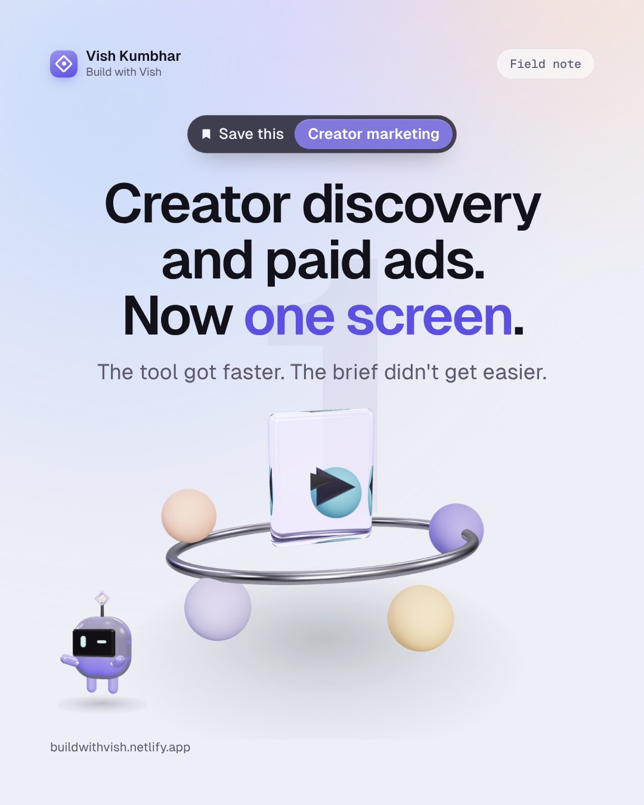
Meta put creator discovery and paid ads in one screen.
Meta put creator discovery and paid ads in one screen. In mid-September, Meta launched the Creator Marketing Hub. It merges Creator Marketplace and the Partnership Ads Hub into one place. What's inside: → Creator discovery and content search → Content-level permissions with expiry dates → One-click ads from creator posts → Messaging creators inside the hub → Facebook creators added to the Creator Marketplace API, which until now only covered Instagram creators Here's what most people miss: speed was never the bottleneck. After 850+ creator deals, the hard part wasn't finding a creator or boosting a post. It was the brief and the rights. [VISH: confirm this line is true for you before posting] What a one-click button doesn't fix: → Usage rights. How long, which channels, which markets → Fit. Would your product look natural in their last 12 posts? → Disclosure. In Germany, "Werbung" or "Anzeige" at the start of the caption (general info, not legal advice) → Payment. When the creator actually gets paid, and what triggers it Faster tools make the brief matter more. Which part of creator campaigns still eats most of your week?
The 5-factor creator fit score I use (free, with the sheet): https://buildwithvish.netlify.app/#read-shortlist-creators-with-ai
| Claim | Source | Date |
|---|---|---|
| Creator Marketing Hub launched, merging Creator Marketplace and Partnership Ads Hub | MediaPost, Colin Kirkland https://www.mediapost.com/publications/article/418022/ | 15 Sep 2026 |
| Same, "officially launched on Wednesday" | eMarketer, Marisa Jones https://www.emarketer.com/content/meta-s-creator-marketing-hub-gives-brands-central-resource-partnerships | 16 Sep 2026 |
| "Until now only accessible to Instagram creators" (Creator Marketplace API) | MediaPost (above) | 15 Sep 2026 |
| Launch date: MediaPost dated 15 Sep, eMarketer (16 Sep) says "Wednesday". Copy says "mid-September" | both | 15-16 Sep 2026 |
| Content-level permissions with expiry dates, one-click ad creation, messaging, Facebook creators added to Creator Marketplace API | MediaPost (above); cross-checked with commonthreadco.com coverage | 15 Sep 2026 |
| "Werbung" / "Anzeige" ad labels in Germany | Evergreen; already on Build with Vish (ad-labels-in-europe). Re-verify before posting | n/a |
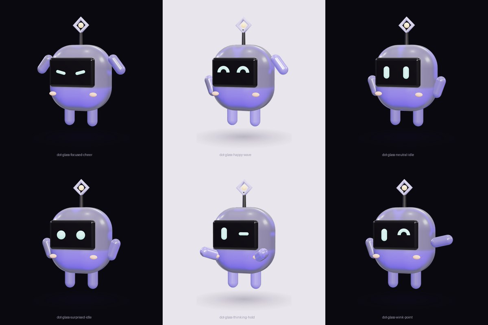
Made in Canva from your site photo. Open avatar v2 in Canva (recommended) · v1, too photo-real. Use: CTA slides, build-in-public and career posts.
| Score | Topic | Pillar | Status |
|---|---|---|---|
| 9.2 | ChatGPT text in the EU is getting an invisible watermark | AI tools that change marketing work | sample drafted (Direction A) |
| 8.6 | ChatGPT will show ads next to the images you generate | AI tools that change marketing work | sample drafted (Direction B) |
| 8.4 | Meta put creator discovery and paid ads in one screen | Creator economy x AI | sample drafted (Direction C) |
| 8.4 | Anthropic is training 10,000 'Frontier Deployed Engineers'. The job marketers should watch | Career and AI Ops pivot | needs second source + Vish's personal angle |
| 8.4 | The weekly marketing report that writes itself (my open-source build) | Real workflows and prompts | ready (backfill candidate) |
| 7.8 | Brands can now turn a creator's Instagram Live into a paid ad | Creator economy x AI | ready to draft |
| 7.8 | LinkedIn now punishes 'Comment YES below'. Here's what still earns comments | Contrarian takes | hold until Vish's own data exists |
| 7.4 | Anthropic is giving startups a free year of Claude Team and $1,000 in credits | AI tools that change marketing work | below bar (7.4 avg) unless paired with a real workflow |
| 7.2 | Claude Code now has mods. I'd use them for marketing ops like this | Build in public | needs primary source and a real mod built first |
| 5.8 | Threads ads no longer need an Instagram account | AI tools that change marketing work | rejected: one source, weak fit |
# Reviewer report, 6 Oct 2026
## Verdicts
- **EU watermark (carousel): fix first.** Missing a key hedge and a key limitation. Weak cover art.
- **ChatGPT image ads (video): fix first.** The hook overstates a US-only test. video.mp4 was still rendering and failed ffprobe ("moov atom not found"), so it is **unreviewed**.
- **Meta Creator Hub (image): don't ship yet.** It has a live placeholder, an unsourced claim, and stale "just" framing.
## Issues
| # | Sev | Location | Issue | Fix |
|---|---|---|---|---|
| 1 | blocker | meta/caption.md para 5 | `[VISH: confirm this line...]` is still in the caption. The 850+ claim is unconfirmed. | Vish confirms the line, then delete the bracket. |
| 2 | blocker | chatgpt/video.mp4 | The file is invalid (render in progress). | After the render, run ffprobe and scrub all 30 s against video.json. |
| 3 | should fix | meta/caption.md bullet 5 | "what used to be Instagram-only" isn't in any source. MediaPost only says Facebook creators were onboarded to the Creator Marketplace API. | "Facebook creators now in the Creator Marketplace API". |
| 4 | should fix | meta/caption.md L1 | "Meta **just**..." about news that's 21 days old. sources.md itself says not to frame it as news. | "Meta merged creator discovery and paid ads into one hub." |
| 5 | should fix | meta/sources.md | No Meta primary source. Dates disagree: MediaPost (Tue 15 Sep) vs eMarketer "launched on Wednesday". | Verify on the Meta newsroom, or write "mid-September". |
| 6 | should fix | meta/caption.md, Disclosure line | The "Werbung"/"Anzeige" rule is a legal claim marked "re-verify". | Verify it, link the ad-labels page and add "not legal advice". |
| 7 | should fix | meta/image.png art | The ring cuts through the glass tile and splits the play icon. Horizontal refraction seams. The ring's right end curls open. It looks broken. | Re-render with the ring behind the tile, closed and with no seams, or drop the ring. |
| 8 | should fix | meta/image.png mascot | The "focused" eyes read as angry. | Use the neutral or happy variant. |
| 9 | nit | meta/image.png | The badge "850+ CREATOR DEALS IN" reads as cut off. "One screen" overstates "one platform". About 230px of dead space above the art. | "From 850+ creator deals". "one hub". Move the art up. |
| 10 | should fix | chatgpt scene 1, caption L1, cover poster | "ChatGPT **will show** ads next to the images you generate" implies every user. It's a US-only test with initial advertisers, and ads run on the free and low-cost tiers (TechCrunch). | "ChatGPT is testing ads next to the images you generate." |
| 11 | should fix | chatgpt scene 5 | On screen it drops "**blended** paid-search benchmark" and has no single-brand hedge (that's only in the caption). | Add "blended" and "One brand, early data." |
| 12 | should fix | chatgpt/caption.md CTA | "Test this in Q1?" goes to an EU audience, but the format is US-only. | Add "Not in Europe yet", or ask "if it reached the EU". |
| 13 | should fix | chatgpt s3 frame | The text says "Labelled", but the ad tile has no "Sponsored" tag, and it sits inside the fan, which undercuts "beside, not inside". | Add a "Sponsored" chip and offset the tile clearly to the side. |
| 14 | nit | chatgpt end.png, s5, s3 | Thin vertical line artefact on the purple tile (about x627, y345-420). s5: tile clips the right edge. s3: tile nearly touches the header pill. The same art in all 6 scenes feels static. | Fix the seam. Keep 48px padding. Vary scale and camera per scene. |
| 16 | should fix | eu/slide-04, caption | ~80%/~95% is "for content such as psychology". It's "substantially lower" for maths. The caption drops "at 1% false-positive" and "expert organisations". | "Best case, prose. Much lower for maths." Restore both in the caption. |
| 17 | should fix | eu/slide-05 | Missing "**no watermark doesn't prove a human wrote it**" (OpenAI says this explicitly). "Only if long enough" is a condition, not a signal, and it also needs unedited, untranslated text from an eligible model. | Change the right column to a single item. Add a footer: "No watermark ≠ human-written." |
| 18 | should fix | eu/slide-04 + slide-07 #1 + caption | "Heavily edited text is harder to detect" next to "Editing... was always the job" can read as evasion advice. | Add "Edit for quality, not to hide AI use. Disclose anyway." Never cite the synonym-swap stats. |
| 20 | should fix | eu/slide-01 art | Blurry halos and a ghosted left edge on the bubble. Violet fringing on the bars. The magnifier lens shows empty white, so the "reveals hidden mark" idea fails. | Re-render with clean edges and have the lens enlarge the dot grid. |
| 21 | nit | eu/slides 5, 7, 8 | The numbering jumps 03 → 05 (slides 5 and 7 have no label). Widows: "it" (slide 5), "no?" (slide 8). | Add "04 ·" and "06 ·" labels. Balance the line breaks. |
| 22 | nit | eu/slides 2, 4, 6; all source lines | Cards float with about 250px of empty space above them. Source lines (about 18px grey mono) become about 7px on a phone. | Anchor the cards higher. Source text at least 24px. |
| 24 | nit | eu + chatgpt captions | Both end "Yes or no?" on the same day. It feels templated and close to vote-bait. | Use an open question on one of them. |
| 25 | should fix | all first-comment.md | Hash routes always return 200, so the linked pages aren't verified. | Confirm each page exists before posting. |
## Passed
No dashes, no banned words, British spelling, hooks of 10 to 11 words, no third-party logos, a consistent mascot. All numbers trace to the sources, and the hedges are correct.
# Reviewer findings: what changed (6 Oct 2026)
| Finding | Action |
|---|---|
| A: 80%/95% figures missing "prose like psychology", 1% FPR, maths caveat | Added to slide 4 and caption |
| A: "no watermark doesn't prove human authorship" missing | Added to slide 5 and caption |
| A: editing lines could read as evasion advice | Now "Edit AI drafts for quality and facts, not to hide AI use" |
| A: caption dropped "expert organisations" | Added |
| A: blurry bubble, empty lens | Bubble re-made as crisp porcelain; lens now reveals the magnified dot lattice |
| B: hook overstated a US-only test | "ChatGPT is testing ads next to the images you generate." |
| B: 15.3% screen dropped "blended", no caveat | "blended paid-search benchmark" + "One brand, early data" |
| B: Q1 question wrong for EU audience | New closing question, notes US-only |
| B: no "Sponsored" tag on the ad tile | Added a tracked "Sponsored" chip during the labelled scene |
| B: video not verifiable | Re-rendered after fixes; ffprobe checked |
| C: "Meta just" on 21-day-old news; date conflict | "Meta put…", "In mid-September" |
| C: "Instagram-only" unsourced | It is in MediaPost ("until now, has only been accessible to Instagram creators"); now cited in sources.md |
| C: Werbung/Anzeige legal claim | Marked "general info, not legal advice"; re-verify stays on the checklist |
| C: ring cut through tile, angry mascot | Tile lifted above the ring; mascot now neutral |
| C: unconfirmed 850+ line | **Kept as a gate for Vish.** Post is blocked until he confirms or deletes it |
| All: "Source:" lines too small | Raised from 19 px to 22 px |
| All: two "Yes or no?" closers | B now ends on an open question |
| All: hash-route links can't be verified | Known: the watermark page is drafted in `out/…/site-page/`, the other two pages exist in the buildwithvish repo |
| B: thin line on purple tile (end frame) | Not reproduced in the re-render stills; left as is |